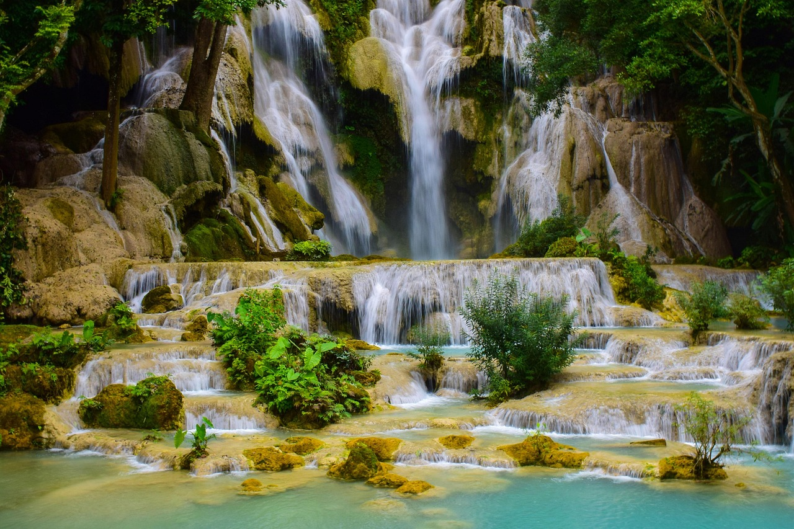
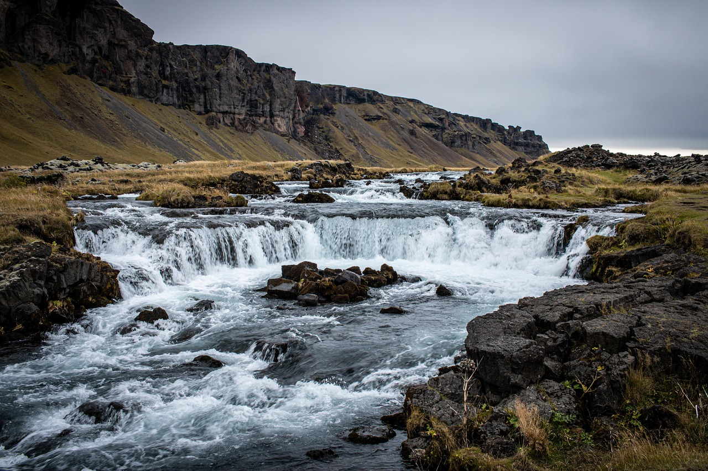

Introduction
南太行的水景精华
八里沟景区位于河南省新乡市辉县上八里镇，是国家5A级旅游景区、国家地质公园、自然猕猴保护区。景区以"雄、奇、险、秀、幽"著称，荟萃了太行山水之精华，有"太行之魂、中华风骨"的美誉。
八里沟的核心景观是天河大瀑布，落差高达180米，宽约20米，是南太行地区落差最大的瀑布。雨季时瀑布如银河倒挂，水声震天，水雾弥漫，阳光下常有彩虹出现。瀑布后有水帘洞，游客可穿行其间，感受"水帘洞天"的奇妙体验。
景区内还有红石河、桃花湾、山神庙、羊洲地、猕猴保护区等多个景点。红石河因河床为红色砂岩而得名，碧水红石相映成趣。猕猴保护区内有数百只野生太行猕猴，活泼可爱，是亲子游的热门打卡地。
Visitor Info
🕐
建议时长
4-6小时
🎫
门票
¥100（景交¥40）
📍
地址
辉县·上八里镇
🚌
交通
新乡拼车约1.5h
⏰
开放时间
08:00-18:00
🏷️
联票
三景区¥120/3天
Route
游览路线推荐
🚪 山门 → 桃花湾（0.5h）
从景区入口乘坐景交车至桃花湾，沿途欣赏太行峡谷风光。桃花湾三面环山，春季桃花盛开时景色极美。
💦 桃花湾 → 天河瀑布（1.5h）
沿溪流而上，途经山神庙、羊洲地，抵达天河大瀑布。可在水帘洞穿行，感受瀑布的震撼力。建议上午前往，光线最佳。
🪨 天河瀑布 → 红石河（1h）
可乘观光电梯或沿步道上行至红石河。红色砂岩河床与碧绿河水形成强烈视觉对比，是拍照的绝佳地点。
🐒 猕猴保护区 → 返程（1h）
下山途中经过猕猴保护区，可观太行野生猕猴。注意保管好随身物品，不要投喂人类食品。
Gallery
八里沟风光

